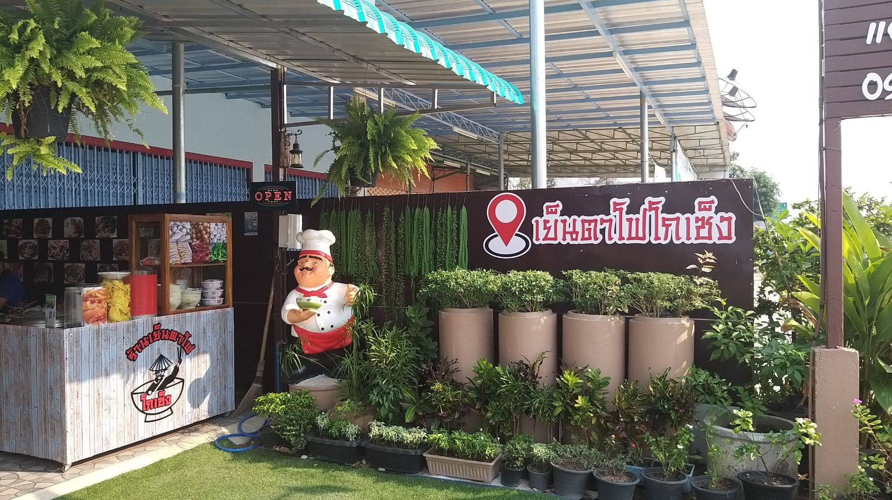

สุกี้สากเหล็ก "เจ๊แต๋ว"
เป็นร้านเก่าแก่ในอำเภอสากเหล็กที่มีรสชาติอร่อยกินได้ทั้งเด็กทั้งผู้ใหญ่ และราคาไม่แพง และร้านนี้เป็นร้านอารหารตามสั่ง,สุกี้ และกาแฟสด

ร้านเย็นตาโฟ โกเซ็ง
เป็นร้านที่มีบรรยกาศดี และมีที่จดรถสะดวกอาหารอร่อยมีให้เลืกได้หลายเมณู เช่น เย็นตาโฟ-สุกี้ และอาหารตามสั่ง เช่นข้าวผัดกระเพรา ข้าวพัดปู